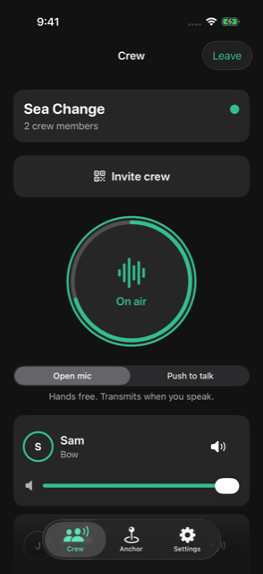
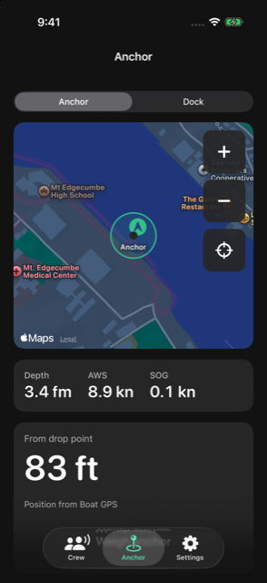
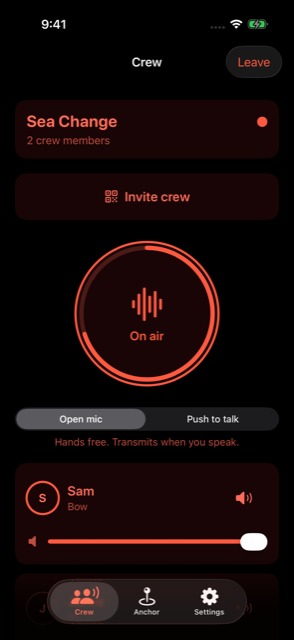

Create your boat.
Give your boat a name on the first phone. Foredeck creates a pairing code for your crew.
CREW COMMUNICATION, FROM HELM TO BOW
Hands-free crew intercom and a shared anchor view. Keep the conversation close when docking and anchoring.
Built for iPhone · iOS 17 or later
Submitted for App Store review

Hands free.Open mic or push-to-talk.
Phone to phone.Boat router optional.
A shared picture.Anchor, swing circle, distance.
LESS SHOUTING ACROSS THE DECK
Talk naturally, with no button to hold. Switch to push-to-talk when you want more control.
Know who is speaking and where they’re stationed. Adjust each crew member’s volume or mute a channel when you need to.
Connect over the boat’s Wi-Fi or directly between nearby phones. Each crew member needs Foredeck open and paired to the same boat.

THE SAME VIEW, ON EVERY PHONE
See the anchor drop point, swing circle and distance together.
A SIMPLE START
Give your boat a name on the first phone. Foredeck creates a pairing code for your crew.
Scan the invitation QR code or enter the same boat name and code on each phone.
Choose your station, join the crew session and check everyone can hear before the maneuver.
AFTER THE SUN GOES DOWN
Switch to red-on-black controls and a matching night icon. Large buttons and clear readouts keep the essentials within reach.
Find night mode
BEFORE YOU GET UNDERWAY
Find pairing help, permission settings and practical tips for your first crew session.
Visit Foredeck supportTest on your own devices before use. Connectivity, GPS, permissions and device state affect operation. Foredeck is an aid to crew coordination and does not replace seamanship or a proper watch.